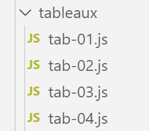

4. Tablas

4.1. script [tab-01]
El siguiente script ilustra algunas características de las matrices de JavaScript. Estas se asemejan a las matrices de PHP, pero con una diferencia importante: se manipulan mediante punteros y se consideran objetos.
'use strict';
// an array is an object manipulated via its address
const tab1 = [1, 2, 3];
// address copying
const tab2 = tab1;
// tab1 and tab2 point to the same table
console.log("tab1===tab2 :", tab1 === tab2);
// the table can be modified using either tab1 or tab2
tab2[1] = 10;
console.log("tab1=", tab1);
console.log("tab2=", tab2);
Ejecución
[Running] C:\myprograms\laragon-lite\bin\nodejs\node-v10\node.exe "c:\Temp\19-09-01\javascript\tableaux\tab-01.js"
tab1===tab2 : true
tab1= [ 1, 10, 3 ]
tab2= [ 1, 10, 3 ]
Comentarios
- La línea 2 de los resultados muestra que [tab1] y [tab2] son dos entidades iguales, de hecho dos punteros iguales;
- Las líneas 4 y 5 de los resultados muestran que estos dos punteros apuntan a la misma matriz;
4.2. script [tab-02]
Este script demuestra que las matrices de JavaScript difieren de las matrices en los lenguajes compilados.
'use strict';
// table
const tab = [];
console.log("tab=", tab, ", longueur=[", tab.length, "]");
console.log("-------------------------------");
// element initialization
tab[3] = 100;
tab[1] = "huit";
// table
console.log("tab=", tab, ", longueur=[", tab.length, "]");
console.log("-------------------------------");
// toString
console.log("tab.toString=[", tab.toString(), "]");
console.log("-------------------------------");
// the keys to the picture are its indices
for (let key of tab.keys()) {
console.log("clé=[", key, "], valeur=[", tab[key], "]");
}
console.log("-------------------------------");
// table values
for (let value of tab.values()) {
console.log("valeur=[", value, "]");
}
- línea 4: una matriz vacía;
- línea 8: una matriz no tiene un tamaño fijo. Es simplemente una secuencia de elementos indexados por un número. Puedes inicializar el elemento n.º 3 aunque los elementos [0, 1, 2] aún no estén definidos;
- líneas 16–24: una matriz de JavaScript se comporta de manera similar a una matriz de PHP;
Ejecución
[Running] C:\myprograms\laragon-lite\bin\nodejs\node-v10\node.exe "c:\Temp\19-09-01\javascript\tableaux\tab-02.js"
tab= [] , longueur=[ 0 ]
-------------------------------
tab= [ <1 empty item>, 'huit', <1 empty item>, 100 ] , longueur=[ 4 ]
-------------------------------
tab.toString=[ ,huit,,100 ]
-------------------------------
clé=[ 0 ], valeur=[ undefined ]
clé=[ 1 ], valeur=[ huit ]
clé=[ 2 ], valeur=[ undefined ]
clé=[ 3 ], valeur=[ 100 ]
-------------------------------
valeur=[ undefined ]
valeur=[ huit ]
valeur=[ undefined ]
valeur=[ 100 ]
4.3. script [tab-03]
Este script muestra varios métodos del objeto [array].
'use strict';
// a table can contain different types of data
const tab = [1, 2, "un", "deux", true, [10, 20], { prop1: 10, prop2: "abc" }];
// console.log can display the contents of an array
show(1);
console.log("tab=", tab);
show(2);
// table path with foreach
tab.forEach(element => {
console.log("élément=", element, typeof (element));
});
show("2b");
// another script to do the same thing
tab.forEach(function (element) {
console.log("élément=", element, typeof (element));
});
show(3);
// table route with for
for (let i = 0; i < tab.length; i++) {
console.log("i=", i, "tab[i]=", tab[i]);
}
show(4);
// change tab[i]
tab[5] = [];
// display
console.log("tab=", tab);
show(5);
// remove the last element
let element = tab.pop(tab);
console.log("élément=", element, "tab=", tab);
show(6);
// add an element to the end of the array
tab.push('xyz');
console.log("tab=", tab);
show(7);
// add an element at the beginning of the array
tab.unshift(1000);
console.log("tab=", tab);
show(8);
// remove the 1st element from the array
element = tab.shift();
console.log("élément=", element, "tab=", tab);
show(9);
// remove element no. 2 from the table
element = tab.splice(2, 1);
console.log("élément=", element, "tab=", tab);
show(10);
// remove two elements from the table, starting with element no. 1
element = tab.splice(1, 2);
console.log("élément=", element, "tab=", tab);
// function
function show(param) {
console.log("[", param, ":::::::::::::::::::::::::::::::::::::::::::::::::::::::::::::::::: ]");
}
Comentarios
- La diferencia entre las matrices de PHP y las de JavaScript queda ilustrada en las líneas 3 y 24:
- La línea 3 declara la variable [tab] como una constante;
- La línea 24 modifica el elemento tab[5];
En la línea 3, es el puntero que apunta a la matriz el que se declara como constante, no la matriz en sí. La matriz en sí puede modificarse.
- Líneas 14-16: Se recorre la matriz [tab] utilizando el método [forEach] de la matriz [tab]. Este método toma como parámetro la definición de una función, que podría denominarse función literal. Esta función toma un parámetro: el elemento actual de la matriz [tab]. La función se invoca para cada elemento de la matriz. Este tipo de sintaxis es habitual en JavaScript;
- líneas 9-10: utilizamos una sintaxis diferente para definir la función. En lugar de escribir:
- función(p1, p2, …, pn){….}
escribimos:
- (continuación)
- (p1, p2, …, pn) => {…}. Esto se denomina notación «flecha»;
- El resto del código se explica en los comentarios;
A partir de este script, ten en cuenta que:
- una matriz es un objeto al que se hace referencia mediante un puntero;
- este objeto tiene métodos [forEach, pop, push, shift, unshift];
4.4. script [tab-04]
Este script presenta otros métodos de los objetos de matriz.
'use strict';
// table manipulation method
// a picture
const tab = [];
for (let i = 0; i < 10; i++) {
tab[i] = i * 10;
}
// display
console.log("tab=", tab);
// map
const tab2 = tab.map(element => {
return { prop1: element, prop2: element * element }
});
// display
console.log("tab=", tab);
console.log("tab2=", tab2);
// reduce without initial value
const somme = tab.reduce((accumulator, currentValue) => accumulator + currentValue);
console.log("somme tab=", somme);
// reduce with initial value
const somme2 = tab.reduce((accumulator, currentValue) => accumulator + currentValue, 10);
console.log("somme2 tab=", somme2);
// filter
const tab4 = tab.filter((element) => {
if (element > 50) {
return element;
}
});
console.log("tab4=", tab4);
// find
const element1 = tab.find((element) => (element > 20));
console.log("élément1=", element1);
// findIndex
const index1 = tab.findIndex((element) => (element === 20));
console.log("index1 20=", index1);
// indexOf
const index2 = tab.indexOf(30);
console.log("index2 30=", index2);
const index3 = tab.indexOf(31);
console.log("index3 31=", index3);
// lastIndexOf
const index4 = [4, 5, 4, 2].lastIndexOf(4);
console.log("index4 4=", index4);
// spell
const tab5 = [4, 5, 4, 2].sort();
console.log("tab5=", tab5);
// reverse spell
const tab6 = [4, 5, 4, 2].sort((e1, e2) => {
if (e1 > e2) {
return -1;
}
else if (e1 === e2) {
return 0;
} else {
return +1;
}
});
console.log("tab6=", tab6);
Comentarios
- líneas 13–15: El método [map] toma una función de transformación como parámetro. Esta función se invoca repetidamente para cada elemento de la matriz. Se encarga de transformar el elemento en otra cosa; en este caso, un objeto con las propiedades [prop1, prop2]. El método [map] devuelve una nueva matriz. La matriz original permanece sin cambios:
tab= [ 0, 10, 20, 30, 40, 50, 60, 70, 80, 90 ]
tab2= [ { prop1: 0, prop2: 0 },
{ prop1: 10, prop2: 100 },
{ prop1: 20, prop2: 400 },
{ prop1: 30, prop2: 900 },
{ prop1: 40, prop2: 1600 },
{ prop1: 50, prop2: 2500 },
{ prop1: 60, prop2: 3600 },
{ prop1: 70, prop2: 4900 },
{ prop1: 80, prop2: 6400 },
{ prop1: 90, prop2: 8100 } ]
- línea 20: El método [reduce] toma como parámetro una función de dos argumentos que se invoca repetidamente para cada elemento de la matriz. Esta función toma dos argumentos:
- [currentValue] es el elemento actual de la matriz;
- [accumulator] es el último resultado obtenido por la función. Si no se proporciona ningún valor inicial para este acumulador, será 0;
- la primera vez que se invoca la función de acumulación, devuelve [0+tab[0]]. Este valor se asigna al acumulador;
- la segunda vez, devuelve acumulador+tab[1], es decir, tab[0]+tab[1];
- La tercera vez, devuelve acumulador + tab[2], que es tab[0] + tab[1] + tab[2];
- etc. En última instancia, el acumulador representará la suma de todos los elementos de la matriz [tab];
- línea 26: el método [filter] toma una función de filtrado como parámetro. Esta función se invoca repetidamente para cada elemento de la matriz y recibe ese elemento como parámetro. Debe devolver:
- [true] si el elemento debe conservarse;
- [false] en caso contrario;
- línea 33: el método [find] toma una función de búsqueda como parámetro. Esta función se invoca repetidamente para cada elemento de la matriz y recibe ese elemento como parámetro. Debe devolver [true] si el elemento recibido cumple los criterios de búsqueda. La búsqueda se detiene entonces. Por lo tanto, el método [find] devuelve 0 o 1 elemento;
- línea 36: el método [findIndex] funciona como el método [find], pero en lugar de devolver el elemento encontrado, devuelve su índice en la matriz;
- líneas 39 y 41: el método [indexOf(value)] busca [value] en la matriz y devuelve su índice, o -1 si no lo encuentra;
- línea 44: el método [lastIndexOf(value)] funciona igual que el método [indexOf(value)], pero comienza la búsqueda desde el final de la matriz;
- línea 47: el método [sort] sin parámetros devuelve una matriz ordenada en orden natural (números, cadenas);
- línea 50: cuando el orden natural no es adecuado, debes pasar una función con dos parámetros (e1, e2) al método [sort], que devuelve:
- +1 si e1 debe ordenarse después de e2;
- -1 si e1 debe ordenarse antes que e2;
- 0 si ambos elementos deben tener el mismo rango;
El método [sort] invoca repetidamente la función pasada como parámetro para comparar dos elementos de la matriz;